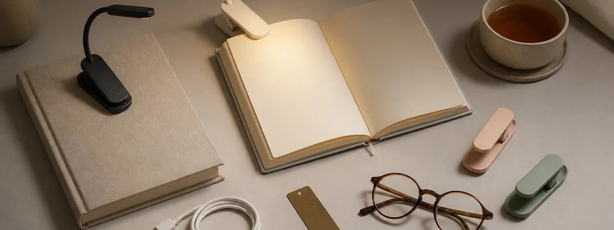

This support page focuses on clip strength, neck flex, and paperback fit for book lights. Product comparisons belong on 7 Best Book Lights for Reading In the Dark. Previous cloud article: foil laminators.
Clip Strength, Neck Flex, and Paperback Fit
Attachment check. The clip should hold a paperback, hardback, e-reader cover, or headboard without crushing pages. A flexible neck should stay where it is aimed instead of drooping as the reader shifts position.
Beam shape. The light should cover the page spread evenly while avoiding glare on glossy paper and shadows near the book spine. For clip strength, neck flex, and paperback fit, judge the light by real reading comfort in darkness rather than by a bright product photo alone.
Comfort control. Multiple brightness levels and warm/cool settings make the light useful for bedtime fiction, dense nonfiction, textbooks, and travel reading. For clip strength, neck flex, and paperback fit, judge the light by real reading comfort in darkness rather than by a bright product photo alone.
Clip stability. A secure clip, flexible neck, and balanced head keep the beam aimed at the page without bending covers or tugging at thin paperbacks. For clip strength, neck flex, and paperback fit, judge the light by real reading comfort in darkness rather than by a bright product photo alone.
Battery habits. Rechargeable models should last through several reading sessions, charge with common cables, and give enough warning before the light fades. For clip strength, neck flex, and paperback fit, judge the light by real reading comfort in darkness rather than by a bright product photo alone.
Quiet use. Buttons, hinges, and adjustments should be quiet enough for shared bedrooms, hotel rooms, dorms, and late-night reading beside a partner. For clip strength, neck flex, and paperback fit, judge the light by real reading comfort in darkness rather than by a bright product photo alone.
Value signals. A strong pick has practical controls, durable hinges, sensible weight, good warranty language, and user feedback from readers who use it nightly. For clip strength, neck flex, and paperback fit, judge the light by real reading comfort in darkness rather than by a bright product photo alone.
Decision note. A book light should make reading feel private, calm, and easy. If clip strength, neck flex, and paperback fit keeps the page clear, the room dark, and the hand position relaxed, it is more likely to become a nightly habit instead of another drawer gadget.
Reading setup checklist
Attachment check. The clip should hold a paperback, hardback, e-reader cover, or headboard without crushing pages. A flexible neck should stay where it is aimed instead of drooping as the reader shifts position.
Beam shape. The light should cover the page spread evenly while avoiding glare on glossy paper and shadows near the book spine. For buyer checklist for clip strength, neck flex, and paperback fit, judge the light by real reading comfort in darkness rather than by a bright product photo alone.
Comfort control. Multiple brightness levels and warm/cool settings make the light useful for bedtime fiction, dense nonfiction, textbooks, and travel reading. For buyer checklist for clip strength, neck flex, and paperback fit, judge the light by real reading comfort in darkness rather than by a bright product photo alone.
Clip stability. A secure clip, flexible neck, and balanced head keep the beam aimed at the page without bending covers or tugging at thin paperbacks. For buyer checklist for clip strength, neck flex, and paperback fit, judge the light by real reading comfort in darkness rather than by a bright product photo alone.
Battery habits. Rechargeable models should last through several reading sessions, charge with common cables, and give enough warning before the light fades. For buyer checklist for clip strength, neck flex, and paperback fit, judge the light by real reading comfort in darkness rather than by a bright product photo alone.
Quiet use. Buttons, hinges, and adjustments should be quiet enough for shared bedrooms, hotel rooms, dorms, and late-night reading beside a partner. For buyer checklist for clip strength, neck flex, and paperback fit, judge the light by real reading comfort in darkness rather than by a bright product photo alone.
Value signals. A strong pick has practical controls, durable hinges, sensible weight, good warranty language, and user feedback from readers who use it nightly. For buyer checklist for clip strength, neck flex, and paperback fit, judge the light by real reading comfort in darkness rather than by a bright product photo alone.
Decision note. A book light should make reading feel private, calm, and easy. If buyer checklist for clip strength, neck flex, and paperback fit keeps the page clear, the room dark, and the hand position relaxed, it is more likely to become a nightly habit instead of another drawer gadget.
Night-use rehearsal
Attachment check. The clip should hold a paperback, hardback, e-reader cover, or headboard without crushing pages. A flexible neck should stay where it is aimed instead of drooping as the reader shifts position.
Beam shape. The light should cover the page spread evenly while avoiding glare on glossy paper and shadows near the book spine. For night use rehearsal for clip strength, neck flex, and paperback fit, judge the light by real reading comfort in darkness rather than by a bright product photo alone.
Comfort control. Multiple brightness levels and warm/cool settings make the light useful for bedtime fiction, dense nonfiction, textbooks, and travel reading. For night use rehearsal for clip strength, neck flex, and paperback fit, judge the light by real reading comfort in darkness rather than by a bright product photo alone.
Clip stability. A secure clip, flexible neck, and balanced head keep the beam aimed at the page without bending covers or tugging at thin paperbacks. For night use rehearsal for clip strength, neck flex, and paperback fit, judge the light by real reading comfort in darkness rather than by a bright product photo alone.
Battery habits. Rechargeable models should last through several reading sessions, charge with common cables, and give enough warning before the light fades. For night use rehearsal for clip strength, neck flex, and paperback fit, judge the light by real reading comfort in darkness rather than by a bright product photo alone.
Quiet use. Buttons, hinges, and adjustments should be quiet enough for shared bedrooms, hotel rooms, dorms, and late-night reading beside a partner. For night use rehearsal for clip strength, neck flex, and paperback fit, judge the light by real reading comfort in darkness rather than by a bright product photo alone.
Value signals. A strong pick has practical controls, durable hinges, sensible weight, good warranty language, and user feedback from readers who use it nightly. For night use rehearsal for clip strength, neck flex, and paperback fit, judge the light by real reading comfort in darkness rather than by a bright product photo alone.
Decision note. A book light should make reading feel private, calm, and easy. If night use rehearsal for clip strength, neck flex, and paperback fit keeps the page clear, the room dark, and the hand position relaxed, it is more likely to become a nightly habit instead of another drawer gadget.
Final fit buffer
Also check how the light behaves with the actual books on the nightstand. Thin paper, glossy pages, thick hardbacks, tiny paperback margins, and e-reader cases can all change the beam. A light that works across those ordinary formats is more useful than one that only looks good clipped to a perfect display book.
For shared rooms, practice the small motions too: clicking the button, adjusting the neck, turning a page, shifting position, and setting the book down when sleepy. Quiet controls and stable aim matter because bedtime reading happens when patience is low and the room should stay calm.
Finally, compare the light against the reader’s normal habits: chapter length, font size, glasses, page color, hand position, and whether the book is held upright or rested on a blanket. These small details decide whether the beam feels gentle after ten minutes and whether the clip stays comfortable for a full evening of reading.
When the night-reading routine is clear, compare the full book light shortlist here: 7 Best Book Lights for Reading In the Dark.